NAS（3）—— Cockpit & 系统调优
本篇文章主要来自于这篇教程。
Debian 初始化
安装初始软件
1 | apt install sudo curl git vim net-tools -y # 以 root 用户运行 |
添加用户至 sudo 组
添加安装系统时创建的第一个用户至 sudo 组，以方便我们后续管理系统。
1 | usermod -aG sudo <user_name> # 请将 <user_name> 替换为要添加的用户名 |
更换国内镜像源
Debian 的软件源配置文件是/etc/apt/sources.list。将系统自带的该文件做个备份，将该文件替换为下面内容，即可使用 TUNA 的软件源镜像。
1 | sudo cp /etc/apt/sources.list /etc/apt/sources.list.bak # 备份 /etc/apt/sources.list |
替换为：
1 | # 默认注释了源码镜像以提高 apt update 速度，如有需要可自行取消注释 |
Debian Buster 以上版本默认支持 HTTPS 源。如果遇到无法拉取 HTTPS 源的情况，请先使用 HTTP 源并安装：
1 | apt-get install apt-transport-https ca-certificates -y |
更新系统
1 | sudo apt update && sudo apt upgrade -y |
Cockpit Web
Cockpit 使 Linux 易于使用。可以将 Cockpit 理解为 Linux 的网页端图形化界面。在 Web 浏览器中借助 Cockpit 查看服务器，启动容器、管理存储、配置网络和检查日志都很容易。
安装 Cockpit
Cockpit 从版本 10 （Buster） 开始在 Debian 中可用。要获取最新版本，建议启用向后移植存储库（以 root 身份）：
1 | . /etc/os-release |
安装或更新软件包：
1 | apt install -t ${VERSION_CODENAME}-backports cockpit -y |
安装附属组件
虚拟机
在浏览器中创建、运行和管理虚拟机。（按需安装，非必要插件）
1 | . /etc/os-release |
Podman 容器
在浏览器中下载、使用和管理容器。（按需安装，非必要插件）
1 | . /etc/os-release |
Cockpit-pcp
Cockpit 面板的历史数据插件。
1 | . /etc/os-release |
45Drives（第三方组件）
45Drives Repo 包含 Navigator、File Sharing、Identities、ZFS 管理器等，推荐拉取并按需安装。
下载并运行 45Drives 脚本：
1 | curl -sSL https://repo.45drives.com/setup | sudo bash |
- Navigator 文件浏览器
1
sudo apt install cockpit-navigator -y
- File Sharing 管理 Samba 与 NFS 文件共享
1
sudo apt install cockpit-file-sharing -y
- Identities 用户和组管理插件
1
sudo apt install cockpit-identities -y
- ZFS 管理器
先安装 ZFS：安装管理器：1
2sudo apt update
sudo apt install -y zfs-dkms zfsutils-linux1
2git clone https://github.com/optimans/cockpit-zfs-manager.git
sudo cp -r cockpit-zfs-manager/zfs /usr/share/cockpit
Cockpit 调优
自动注销闲置用户
在/etc/cockpit/ 目录中创建 cockpit.conf 文件：
1 | sudo vim /etc/cockpit/cockpit.conf |
在文件中添加以下文本，以分钟为单位，这里表示为 15 分钟后自动退出：
1 | [Session] |
保存文件，重启 Cockpit Web 控制台以使更改生效：
1 | sudo systemctl try-restart cockpit |
在登录页面中添加标题
在您首选的文本编辑器中创建 /etc/issue.cockpit 文件。添加要显示的内容作为文件的横幅。
1 | sudo vim /etc/cockpit/issue.cockpit |
在文件中添加需要展示的内容：
1 | HomeNAS Based on Debian 12. |
内容添加完成后，保存这个文件。
在您首选的文本编辑器中创建 /etc/cockpit/cockpit.conf 文件。
1 | sudo vim /etc/cockpit/cockpit.conf |
在文件中添加以下文本：
1 | [Session] |
保存文件，重启 Cockpit Web 控制台以使更改生效：
1 | sudo systemctl try-restart cockpit |
Cockpit 面板登陆后首页展示信息
配置文件路径：
1 | sudo vim /etc/motd |
原文：
1 | The programs included with the Debian GNU/Linux system are free software; |
修改 Web 登陆端口
创建/etc/systemd/system/cockpit.socket.d/listen.conf文件：
1 | [Socket] |
为了使更改生效，请运行以下命令：
1 | sudo systemctl daemon-reload |
上传 SSL 证书
关于 SSL 证书的介绍，详见 反向代理 & HTTPS。
Cockpit 的证书路径为 /etc/cockpit/ws-certs.d。在此目录下有两个文件，0-self-signed.cert 和 0-self-signed.key，分别为 Cockpit 自签名的证书文件与密钥文件。
我们直接使用自己申请的证书内容替换这两个文件的内容即可。注意：如果证书文件为 xxx_bundle.crt 证书链，只保留第一个证书（即终端实体证书），删除其他证书。
1 | cat /path/to/your/cert > 0-self-signed.cert |
最后重启 Cockpit 服务即可：
1 | sudo systemctl restart cockpit |
系统调优
网络配置
编辑文件网络配置文件，命令：
1 | sudo vim /etc/network/interfaces |
部分配置如下。我们在第一部分硬路由的局域网配置中，选择使用路由器来进行静态路由分配，因此对于设备网卡我们设置为 dhcp 即可。如果需要在本地机器上配置静态地址，参照下面注释部分。
- 踩坑记录：对于多网卡设备，不能给两块网卡同时配置网关，否则会导致路由表中出现两个默认路由。
解决办法：只有连接外网的网卡需要配置网关以及 nameserver。
1 | # The loopback network interface |
如果要使用 Cockpit 接管网络配置，需注释掉/etc/network/interfaces文件当中的所有内容，进入Cockpit - 网络 - 接口 - enp1s0（你网络接口名称）- IPV4 - 编辑 - 手动，输入你要设置的IP地址及默认网关。
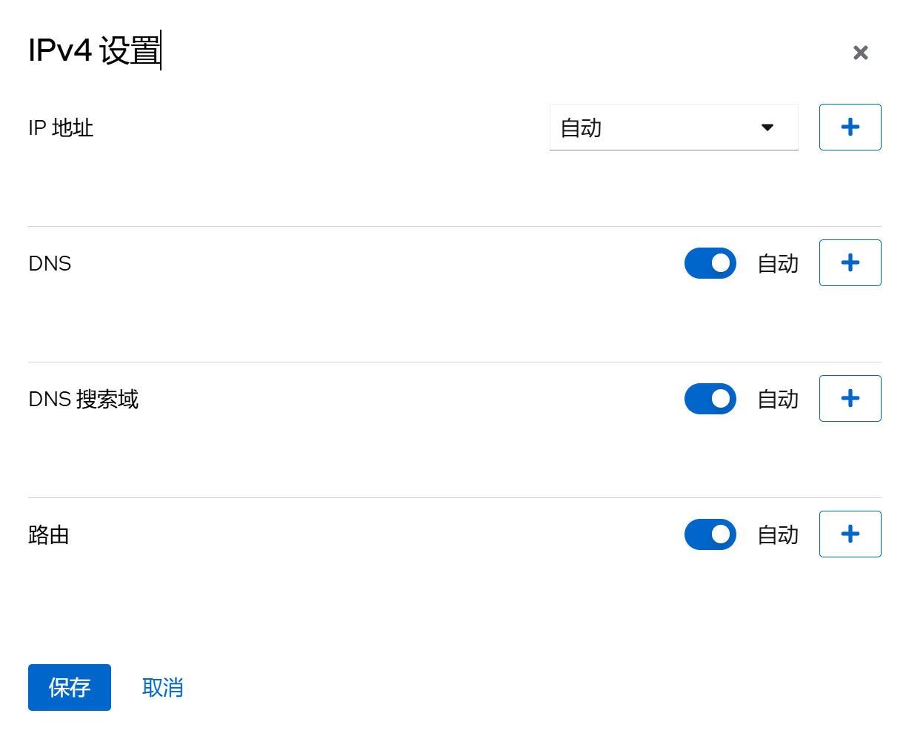
调整系统时区/时间
Cockpit - 概览 - 系统时间 - 点击时间进行校准，时区选择 Asia/Shanghai，设置时间选择自动使用 NTP，然后点击变更，系统会自动联网进行校准。
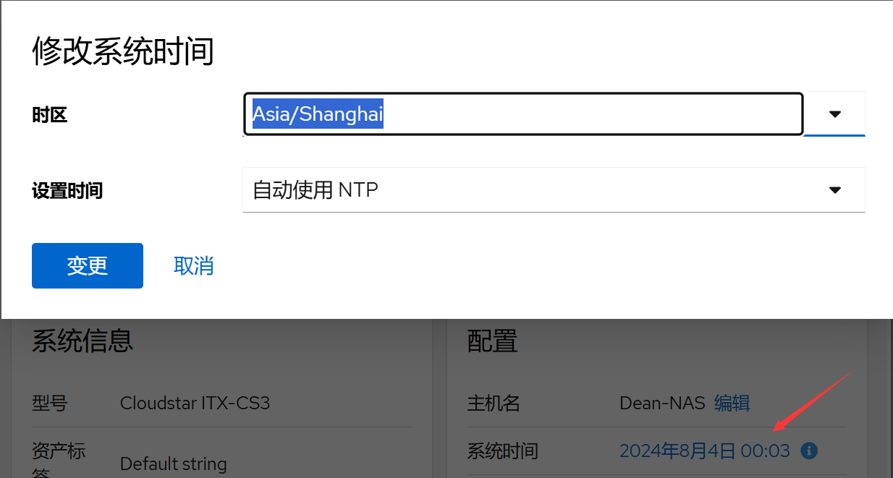
交换空间优化
Debian 默认是当内存使用达到 40% 时就向交换空间写入数据，这样会大大地降低电脑运行效率，我们将它改为达到 90% 再向交换空间写入数据
打开 /etc/sysctl.conf 文件，执行命令：
1 | sudo vim /etc/sysctl.conf |
在文件的末尾添加下面两行配置：
1 | vm.swappiness=10 |
vm.swappiness是用来控制内核在什么时候开始使用交换空间的参数，默认值是 60。将该值调整为 10 表示让内存使用率达到 90% 时才开始使用交换空间。
vm.vfs_cache_pressure 是用来控制内核清理缓存的频率的参数，默认值是 100。将该值调整为 50 表示内核会更倾向于清理文件系统缓存以回收内存。
保存修改并退出编辑器，执行命令：
1 | sudo sysctl -p |
以重新加载配置。
修改内核参数可能会影响系统性能和稳定性，请根据自身需要调整，谨慎操作。
安装 Tuned 系统调优工具
Tuned（又称为 tuned-adm）是一个系统调优工具，旨在帮助优化系统的性能和功耗。它允许管理员根据系统的需求选择不同的预定义配置文件或自定义配置文件，以提供最佳的性能和功耗平衡。
安装 Tuned 软件包：
1 | sudo apt update && sudo apt install tuned |
以下是Tuned的一些常用命令和其功能：
1 | sudo systemctl start tuned # 启动 Tuned 服务。 |
在 Cockpit Web 管理面板上配置 Tuned：
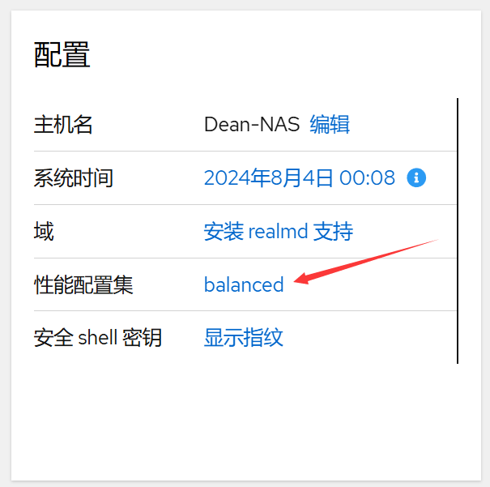
选择你需要的模式激活使用。
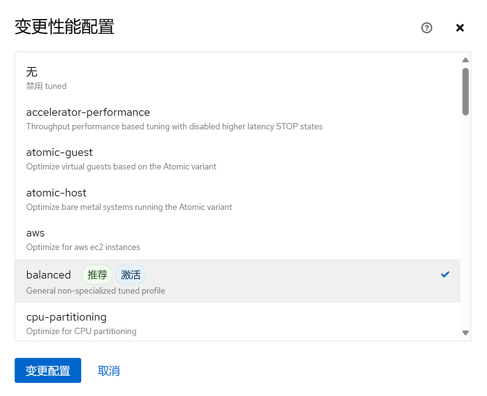
常用 Tuned 配置集
-
throughput-performance
针对高吞吐量优化的服务器配置文件。它禁用节能机制并启用 sysctl 设置，以提高磁盘和网络 IO 的吞吐量性能。CPU 调控器设置为 performance。它将
energy_performance_preference和scaling_governor属性设置为 performance 配置集。 -
accelerator-performance
包含与 throughput-performance 配置集相同的调整。另外，它会将 CPU 锁定为低 C 状态，以便使延迟小于 100us。这提高了某些加速器的性能，如 GPU。
-
network-throughput
用于吞吐量网络调优的配置集。它基于 throughput-performance 配置集。此外，它还增加了内核网络缓冲区。它继承 latency-performance 或 throughput-performance 配置集，并将
energy_performance_preference和scaling_governor属性改为 performance 配置集。 -
Balanced
默认的节能配置文件。它在性能和功耗之间具有折衷。在可能的情况下尽可能使用自动扩展和自动调整。唯一缺陷是增加延迟。在当前的 Tuned 版本中，它启用了 CPU、磁盘、音频和视频插件，并激活了 conservative CPU 调控器。如果支持，
radeon_powersave选项使用 dpm-balanced 值，否则被设置为 auto。它将energy_performance_preference属性改为 normal 能源设置。它还将scaling_governor策略属性改为 conservative 或 powersave CPU 调控器。 -
powersave
用于最大节能性能的配置集。它可以对性能进行调整，从而最大程度降低实际功耗。在当前的 Tuned 发行版本中，它为 SATA 主机适配器启用 USB 自动挂起、WiFi 节能和 Aggresive Link Power Management (ALPM) 节能。它还为使用低折率的系统调度多核功耗，并激活 ondemand 监管器。它启用了 AC97 音频节能，或根据您的系统，HDA-Intel 节能时间为 10 秒。如果您的系统包含启用了 KMS 支持的 Radeon 图形卡，配置集会将其配置为自动节能。在 ASUS Eee PC 上，启用了动态超级混合引擎。它将
energy_performance_preference属性改为 powersave 或 power energy 设置。它还会将scaling_governor策略属性更改为 ondemand 或 powersave CPU 调控器。
配置邮件发送服务
安装 Exim4，命令：
1 | sudo apt install exim4 -y |
配置 Exim4 服务，命令：
1 | sudo dpkg-reconfigure exim4-config |
终端输出配置内容：
1 | Please select the mail server configuration type that best meets your needs. |
邮件系统类型
选择第三项：用 smarthost 发信；无本地信件。
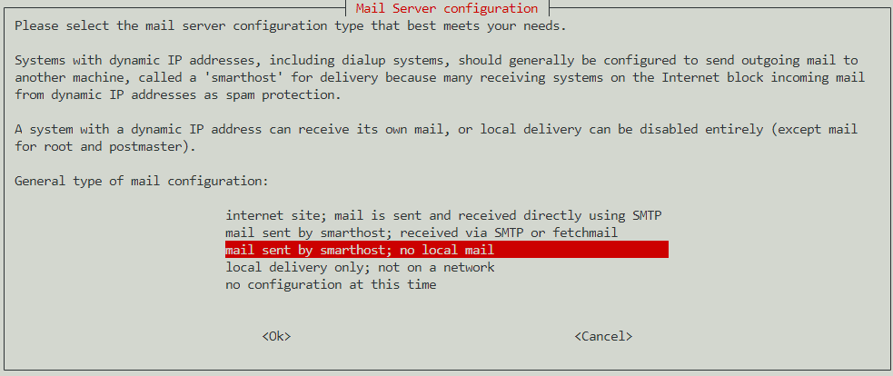
系统邮件名称
填写发邮件的邮件域名，如你的发件邮件地址是 mymail@qq.com，则这里填写 qq.com。
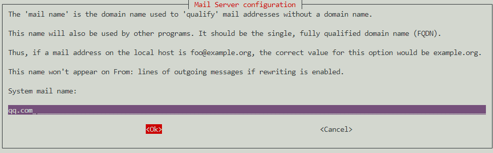
监听入站 SMTP 连接
监听的 IP 地址填写 127.0.0.1 ; ::1，这里表示只监听本地 IPv4 / IPv6 端口，也就是只有本机能发信，外部不能访问。
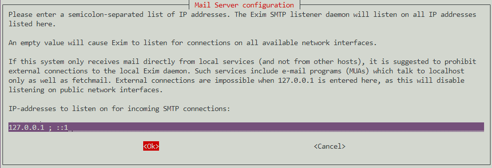
其他可接收邮件的目的地址
这里留空。
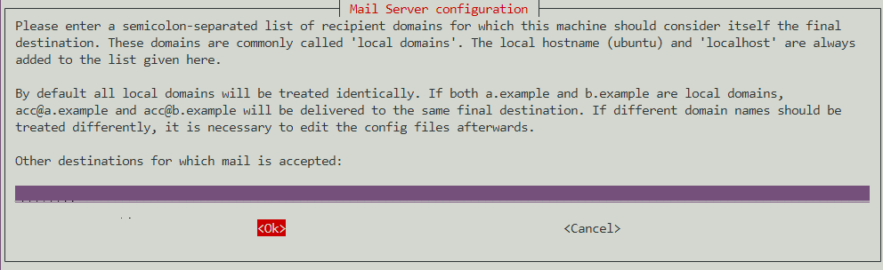
本地用户的可见域名
同样填写你的发件邮箱域名，如 qq.com。
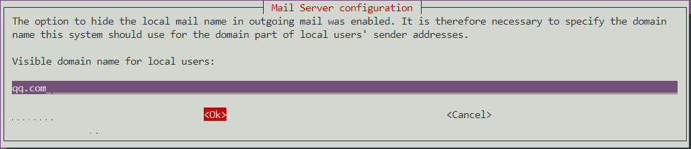
发邮件使用的 smarthost
填写外部 SMTP 地址。对于 QQ 邮箱，这里填写 QQ 的 SMTP 地址smtp.qq.com:587。
按需拨号
不保持最小 DNS 查询量，选择 No。
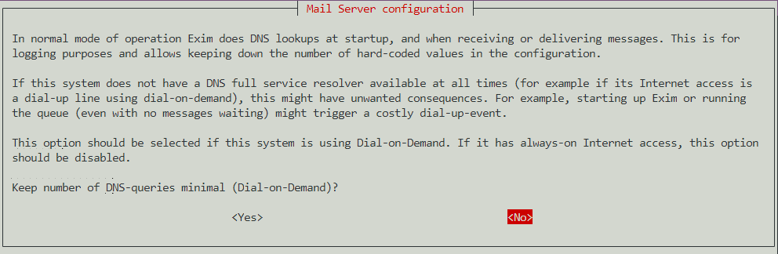
分拆设置文件
如不搭建复杂的邮件服务器，这里保持默认选择 No 即可。
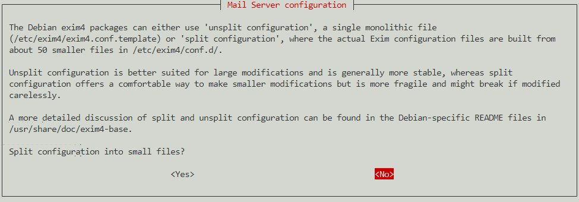
Root 和 postmaster 邮件接收者
这里留空。
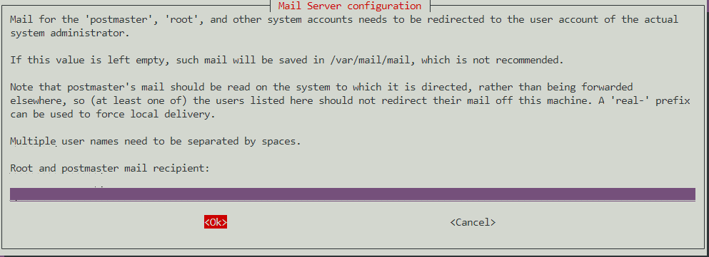
后续设置
输入命令：
1 | sudo vim /etc/exim4/passwd.client |
在末尾加入（注意修改用户名和密码，密码为邮箱授权码，非登录密码）：
1 | qq-smtp.l.qq.com:yourAccountName@qq.com:y0uRpaSsw0RD |
格式为：<发件邮箱 SMTP 服务器>:<发件邮箱账号>:<发件邮箱授权码>，因为上面我们已经设置过 SMTP 服务器地址，所以这里可以填写通配符，当然也可以填 SMTP 地址。
输入命令：
1 | sudo vim /etc/email-addresses |
在末尾加入：
1 | root: mymail@qq.com |
格式：<系统用户名>: <发件邮箱地址>
如设置防火墙，请开放 587 端口，然后重启 exim4：
1 | /etc/init.d/exim4 restart |
发送邮件测试，首先切换到 root 用户：
1 | su - |
输入发送邮件测试命令（修改为你要接收邮件的邮箱地址）：
1 | echo "test" | mail -s "test" user@example.com |
如果你的邮箱收到邮件，就说明安装成功了。
安全防护
安全的概念：
- 收紧安全措施有可能达到使系统无法使用的程度。安全性与便利性需要得到平衡。诀窍在于建立一个安全且有用的系统。
- 最大的威胁是（并且一直都会是）用户。
- 最小权限原则：系统的每一部分应该只能访问到它确实需要的东西，除此之外的则不可以。
- 纵深防御：多个独立的层次能带来更好的安全性。当一层防护被攻破时，另一层应该能够阻止攻击。
- 保持一点点的偏执和多疑。如果有件事看起来太好了，不像是真的，那可能确实如此。
- 永远无法令系统 100% 安全，除非把机器从网络上断开，关掉电源，锁进保险柜，用混凝土封住并不再使用它。
- 为失败做好准备。预先为安全措施被攻破的情况制定可供执行的计划。
本章节主要内容参考自 Debian 安全指南和 Arch Linux 安全。
Debian 安全指南：
https://www.debian.org/doc/manuals/securing-debian-manual/ch04s11.zh-cn.html
Arch Linux 安全：https://wiki.archlinuxcn.org/wiki/安全
执行下列操作前，先给系统用户做个检查。检查是否存在空口令和 root 权限的账号，确认是否存在异常账号，确认 UID 为零的账号只有 root 账号。
操作步骤：
查看 root 权限账号，使用命令：
1 | awk -F: '($3==0)' /etc/passwd # 查看UID为零的账号 |
查看空口令账号，使用命令：
1 | awk -F: '($2=="")' /etc/shadow # 查看空口令账号 |
加固空口令账号，使用命令：
1 | passwd <username> # 为空口令账号设定密码 |
配置高强度密码策略
为了确保系统的安全性，建议设置的口令复杂度策略为：口令最小长度不小于8，至少包含大写字母、小写字母、数字和特殊字符中的三种。
安装 PAM 的 pwquality 模块，cracklib 模块在 Debian 12 中被 pwquality 替代，pwquality 能提供额外的密码检查能力。
1 | sudo apt install libpam-pwquality |
修改文件/etc/pam.d/common-password。 一旦修改，策略会马上生效。
1 | sudo vim /etc/pam.d/common-password |
找到文件中的以下内容：
1 | password requisite pam_pwquality.so retry=3 minlen=8 difok=3 |
添加参数minlen、dcredit、ucredit、lcredit、ocredit。如果文件中已有这些参数，直接修改参数值即可，参数说明如表1所示。
示例：
1 | password requisite pam_pwquality.so retry=3 minlen=9 dcredit=-1 ucredit=-1 lcredit=-1 ocredit=-1 difok=3 |
| 参数 | 说明 | 示例 |
|---|---|---|
| minlen | 口令最小长度配置项。PAM 默认使用了“credits”，因此最小口令长度需要加 1，若需要设置最小口令长度为 8，则 minlen 的值应该设置为 9。" | minlen=9 |
| dcredit | 口令数字要求的配置项。值为负数 N 时表示至少有 N 个数字，值为正数时对数字个数没有限制。 | dcredit=-1 |
| ucredit | 口令大写字母要求的配置项。值为负数 N 时表示至少有 N 个大写字母，值为正数时对大写字母个数没有限制。 | ucredit=-1 |
| lcredit | 口令小写字母要求的配置项。值为负数 N 时表示至少有 N 个小写字母，值为正数时对小写字母个数没有限制。 | lcredit=-1 |
| ocredit | 特殊字符要求的配置项。值为负数 N 时表示至少有 N 个特殊字符，值为正数时对特殊字符个数没有限制。 | ocredit=-1 |
用户连续登陆失败锁定
设置在 3 次登录尝试失败后账户将被锁定至少 5 分钟，或者由管理员将其解锁。
在/etc/pam.d/common-auth中添加如下绿色字体内容，必须按下面顺序添加，命令：
1 | sudo vim /etc/pam.d/common-auth |
1 | # |
参数解析（按需添加）：
1 | audit // 如果用户不存在，则把该用户名记录到系统日志中。 |
接着编辑/etc/pam.d/common-account文件，命令：
1 | sudo vim /etc/pam.d/common-account |
修改内容：
1 | # |
常用操作命令：
查看所有用户的尝试失败登录次数
1 | sudo faillock |
主要看 faillock 命令，显示的 valid 值，v 表示有效，i 表示无效。
查看指定用户（test 用户）
1 | sudo faillock --user test |
解锁指定用户账户（test 用户）
1 | sudo faillock --user test --reset |
解锁所有用户
1 | sudo faillock --reset |
重启系统也能解锁所有用户。
禁止 root 用户密码登录
建议通过 Cockpit Web 管理面板禁止 root 用户密码登陆，平时保持其处于禁用状态，如有需要时可以很方便就通过此处开启，用完即随手关闭。
通过Cockpit Web 管理面板 - 用户账户 - root 用户 - 选项 - 禁用交互式密码，打上勾表示禁止 root 用户使用密码登陆。
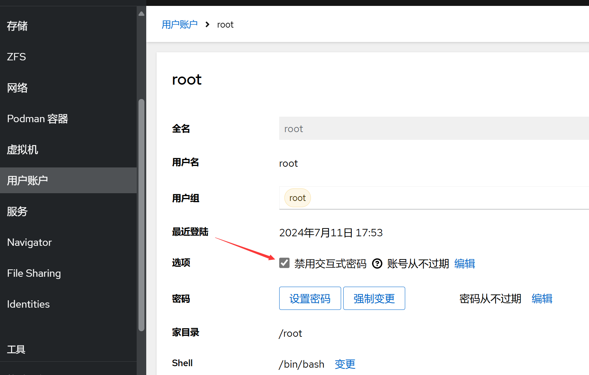
限制用户 su
限制能 su 到 root 的用户。使用命令：
1 | sudo vim /etc/pam.d/su |
修改配置文件，在配置文件中添加行。例如，只允许 sudo 组用户 su 到 root，则添加
1 | auth required pam_wheel.so group=sudo |
添加后如下所示：
1 | # |
用户登录邮件通知告警
通过 PAM 模块，就可以实现用户登录，获取 root 权限时，通过邮件等方式进行通知。以实现，预先知道，预先警惕的目标，降低受影响的范围。以下是通过 PAM 模块实现的邮件通知用户登录的功能。
登录终端，切换为 root 用户。
新建脚本：
1 | vim /etc/pam.d/login-notify.sh |
（该脚本可以存放在任意位置，但是需要将后续的路径指定好即可），内容如下：
1 |
|
脚本中的 user@yourdomain.com 修改为你要接收通知的邮箱地址。
编辑文件：
1 | sudo vim /etc/pam.d/common-session |
在文件最后追加一行：
1 | session optional pam_exec.so debug /bin/bash /etc/pam.d/login-notify.sh |
至此，每一个用户登录都会发邮件通知给收件人，内容包括用户名以及登录的 IP 地址信息。如果遇到陌生 IP，那么就要注意，该主机是否正在遭受攻击。
超时自动注销活动状态
设置系统登录后，连接超时时间，增强安全性：
1 | sudo vim /etc/profile |
修改配置文件，在文件末行添加下列内容：
1 | # 超时自动退出 |
即超时时间为十分钟。
记录所有用户的登录和操作日志
通过脚本代码实现记录所有用户的登录操作日志，防止出现安全事件后无据可查。打开配置文件：
1 | sudo vim /etc/profile |
在配置文件末行输入以下内容：
1 | # 在 history 命令中启用时间戳 |
运行命令加载配置生效：
1 | sudo bash -c "source /etc/profile" |
注意：/var/log/history是记录日志的存放位置，可以自定义。
通过上述步骤，可以在/var/log/history目录下以每个用户为名新建一个文件夹，每次用户退出后都会产生以用户名、登录IP、时间的日志文件，包含此用户本次的所有操作（root用户除外）。
禁止 SSH 服务开机自启动
为了系统的安全起见，建议 SSH 服务在有需要用的时候通过 Cockpit Web 面板开启，平常则处于关闭状态。开启路径：Cockpit - 服务 - ssh.service - 启动
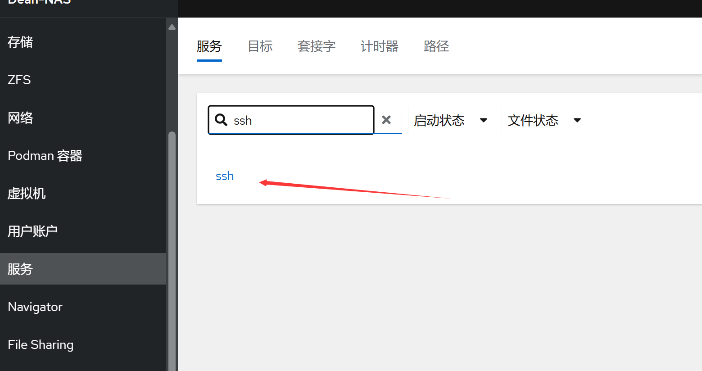
关闭ssh服务开机自动启动，命令：
1 | sudo systemctl disable ssh |
设置开机自动启动ssh服务，命令：
1 | sudo systemctl enable ssh |
单次开启ssh，命令：
1 | sudo systemctl start ssh |
单次关闭ssh，命令：
1 | sudo systemctl stop ssh |
安装防火墙
推荐使用 firewalld 防火墙的理由是，Cockpit Web 管理面板搭配 firewalld 防火墙可提供一个可视化的防火墙管理界面，对新手友好。
从 apt 存储库安装 firewalld，并在安装成功之后关闭 firewalld，关闭之后进入 cockpit 配置规则。
1 | sudo apt update && sudo apt install firewalld -y && sudo systemctl stop firewalld |
登陆Cockpit - 网络 - 防火墙 - 打开防火墙 - 添加新区 - 信任级别 - public，允许的地址 - 整个子网
检查运行状态：
1 | sudo systemctl status firewalld |
在终端输出的内容中将看到：
1 | Active: active (running) |
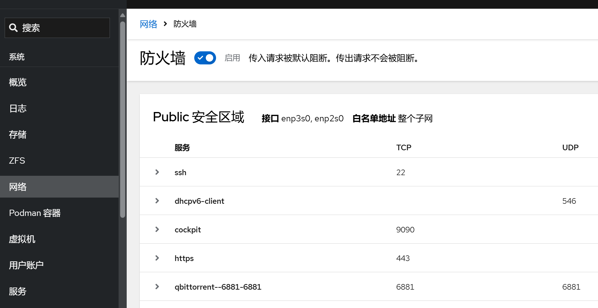
安装自动封锁软件
安装 fail2ban
1 | sudo apt install fail2ban -y |
Fail2ban 安装后会自动设置后台服务。但是，默认情况下它是禁用的，因为它的某些默认设置可能会导致不良影响。您可以使用以下 systemctl 命令验证这一点：
1 | sudo systemctl status fail2ban.service |
终端中输出的内容：
1 | ○ fail2ban.service - Fail2Ban Service |
配置 Fail2Ban
Fail2Ban 的配置文件：/etc/fail2ban/
Fail2Ban 的安装目录：/usr/share/fail2ban/
Fail2Ban 日志文件：/var/log/fail2ban.log
达到阈值之后的执行 Fail2Ban 的动作的配置文件：/etc/fail2ban/action.d/
包含Fail2Ban所有的过滤规则：/etc/fail2ban/filter.d/
fail2ban 服务将其配置文件保存在/etc/fail2ban目录中。
将原配置备份：
1 | sudo cp /etc/fail2ban/jail.{conf,local} |
开始更改配置：
1 | sudo vim /etc/fail2ban/jail.local |
位于文件顶部附近部分下的设置 [DEFAULT] 将应用于 Fail2ban 支持的所有服务。在文件的其他地方，有用于 [sshd] 和用于其他服务的标头，其中包含将在默认设置之上应用的特定于服务的设置。
1 | # 全局设置 |
不要忘记在每次配置更改后重新启动 Fail2ban 服务。重启命令：
1 | sudo systemctl restart fail2ban |
常用命令：
1 | # 启动 |
防止暴力攻击 Web 登陆窗口
编辑defaults-debian.conf文件：
1 | sudo vim /etc/fail2ban/jail.d/defaults-debian.conf |
将对应部分修改为如下内容：
1 | [sshd] |
保存文件后重启 Fail2ban：
1 | sudo systemctl restart fail2ban |
配置邮件告警
备份配置文件：
1 | sudo cp /etc/fail2ban/action.d/mail-whois.{conf,local} |
编辑配置文件：
1 | sudo vim /etc/fail2ban/action.d/mail-whois.local |
替换发送的消息部分：
1 | # Fail2Ban configuration file |
通过curl ifconfig.co获取服务器的外网 IP 地址，方便知道哪台机报出来的告警。
通过curl https://ip.useragentinfo.com/json?ip=<ip>查询获取攻击者的IP信息。
不要忘记在每次配置更改后重新启动 Fail2ban 服务。
安装病毒防护软件
ClamAV 是一个开源的防病毒软件，可用于检测木马，病毒，恶意软件和其他恶意威胁。适用于 Linux、macOS 和 Windows 平台。
安装 ClamAV
1 | sudo apt install clamav |
更新病毒数据库
在安装完成后，需要运行以下命令来更新 ClamAV 的病毒数据库：
关闭 ClamAV 病毒数据库更新服务
1 | sudo systemctl stop clamav-freshclam |
更新数据库
1 | sudo freshclam |
启动 ClamAV 病毒数据库更新服务
1 | sudo systemctl start clamav-freshclam |
使用 ClamAV
扫描指定目录
1 | sudo clamscan -r /path/to/directory # 输入 / 以全盘扫描 |
删除被感染的文件
1 | sudo clamscan --remove /path/to/file |
扫描压缩文件
1 | sudo clamscan -r /path/to/archive.zip |
执行定期扫描
创建一个每天执行一次的定期扫描：
（考虑到 HDD 寿命，若 NAS 部署在内网，可不进行定期扫描）
1 | sudo crontab -e |
在打开的文件中添加以下行：
1 | 0 0 * * * clamscan -r / > /var/log/clamav/scan.log |
这将在每天的午夜（0点）执行全系统扫描，并将扫描结果保存在/var/log/clamav/scan.log文件中。
下一章节：UPS 不断电系统